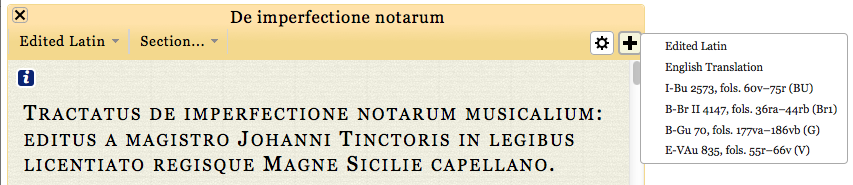

  	<div class="content">
  	  <div class="contentbox">
        <div class="explanation navigation">
          <div class="explanation-row">
            <div class="cell"></div>
            <div class="cell"><a href="../../#">Up (website guide)</a></div>
            <div class="cell"></div>
          </div>
          <div class="explanation-row">
            <div class="cell"><a href="4.html">Back (view options)</a></div>
            <div class="cell"></div>
            <div class="cell"><a href="../Variants/1.html">Next (viewing variants)</a></div>
          </div>
        </div>
        <h3>The edition pages: the add pane menu</h3>
        <p>Texts can be viewed side by side as well as separately. To
          add a pane, click on the plus and select the view you want to
          appear to the right of the current pane.</p>
        <p>When several panes are displayed, they can be scrolled
          separately. To bring them all to the same point in the treatise,
          press the alt key and double click somewhere in the text.</p>
          <div class="helpshot h853">
            
          </div>
          <!--end .contentbox -->
  	  </div>
      <!-- end .content -->
    </div>